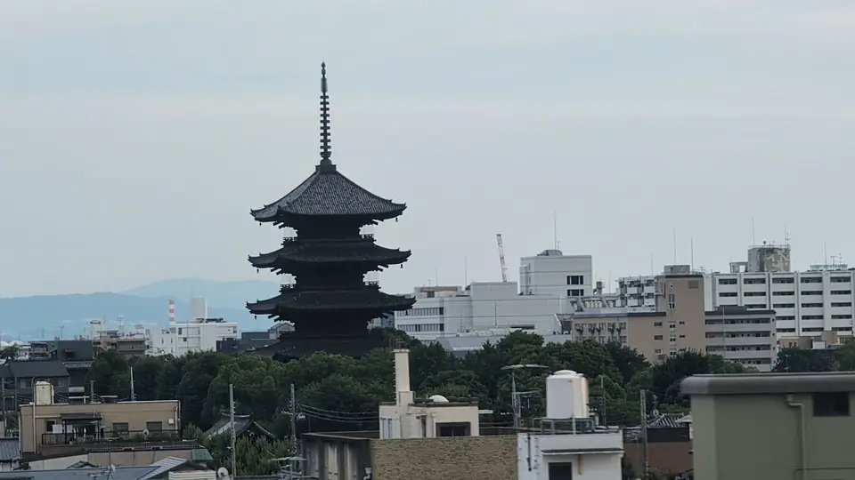

- Section
- Around Kyoto Sta.
- Seat side
- Seat A · sea side
- Timing
- About 131 minutes after leaving Tokyo on a Nozomi train
- Photos
- 2 photos
To-ji and its pagoda — what's the story?
To-ji — formally, Kyo-o-gokoku-ji — was founded in 796 by imperial decree of Emperor Kanmu, just two years after the capital moved to Heian-kyo (present-day Kyoto). Built to the east of the Rajomon capital gate, it was paired with a western counterpart, Sai-ji, to serve as a Buddhist guardian of the new capital. Sai-ji later declined and disappeared, leaving To-ji alone to stand on the city's southern edge for more than a thousand years. In 823, Emperor Saga entrusted To-ji to the priest Kukai (Kobo Daishi), and from then on the temple became the head training center of Shingon esoteric Buddhism in Japan. Its Kondo and Kodo halls house the famous three-dimensional mandala — a group of 21 Buddhist statues realizing Kukai's vision, many of them designated National Treasures or Important Cultural Properties.
More: To-ji Temple official siteAgency for Cultural Affairs: To-ji Five-Story Pagoda (National Treasure)THE THOUSAND KYOTO: To-ji Temple
If you are traveling from Tokyo toward Shin-Osaka, start watching the Seat A · sea side window as you approach Kyoto Sta.. If you are traveling toward Tokyo, the order is reversed.
A closer look at the pagoda itself
Construction of the pagoda was initiated by Kukai in 826, but the first tower is thought to have been completed only in the late 9th century. Struck by lightning and destroyed by fire on four separate occasions — in the 10th, 11th, 15th and 16th centuries — the pagoda you see today is the fifth iteration, rebuilt in 1644 with funding from the third Tokugawa shogun, Iemitsu. At 54.8 meters it is the tallest surviving wooden tower in Japan and among the tallest historical wooden structures anywhere. It is a National Treasure and a signature landmark of the Kyoto skyline in every direction.
The interior is usually closed to the public, but it houses the Five Wisdom Buddhas around the central pillar, with door and panel paintings turning the structure itself into a three-dimensional mandala. Special seasonal openings in spring and autumn allow visitors to see the central pillar rising the full height of the tower and the elaborate inner decoration.
The wider precinct includes the National Treasure Kondo (rebuilt by Toyotomi Hideyori), the Important Cultural Property Kodo, and the Nandaimon south gate. In 1994, To-ji was registered as part of the UNESCO World Heritage 'Historic Monuments of Ancient Kyoto.' The monthly Kobo-ichi flea market on the 21st, held here since Edo times, still fills the grounds with stalls for antiques, kimono and food — one of Kyoto's classic monthly events.
Location at a glance
Open mapSwitch between the spot and the Shinkansen viewpoint.
How to catch To-ji Pagoda
1. Choose the window first
As you approach Kyoto Sta., start watching from Seat A · sea side. Use Live Guide while riding, or the map on this page before you board.
The clearest view lasts only a few seconds. Decide the seat side and window direction before it arrives rather than reaching for your camera late.
2. Highlights
As Kyoto Station approaches, look toward Seat A a little in advance. Above the roofs, a dark tower rises noticeably higher than the surrounding buildings. On trains leaving Kyoto for Shin-Osaka, glancing back just after departure also gives you the pagoda as a fading symbol of the city you are leaving.
To-ji Pagoda in photos

 Related
Mt. Ibuki
Related
Mt. Ibuki
 Related
Atami & Sagami Bay
Related
Atami & Sagami Bay
 Related
Tokyo Tower
Related
Tokyo Tower